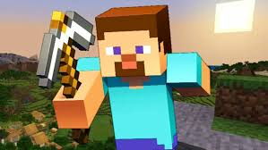

steven

Steve tiene cabello castaño oscuro, piel, nariz y boca oscuros, y ojos azul violáceo, con una camisa azul claro (drapeada en el lado izquierdo), un par de jeans azules, zapatos grises y brazos de 4 pixeles
En el Modo Supervivencia, Steve tiene algunos poderes, el tiene una Fuerza sobrehumana, ya que puede destruir desde madera hasta incluso obsidiana con solo puñetazos y también dañar a otros enemigos como Zombies o Creepers, también posee unas habilidades de salto aumentadas/sobrehumanas, ya que puede saltar increíblemente alto incluso durante el gameplay, pero a pesar de eso, Steve sigue ocupando un puesto muy bajo en cuanto a poderes en el Modo Supervivencia.
En este modo, Steve depende completamente de sus habilidades para sobrevivir:Su principal habilidad es que es un artesano muy bueno con increíbles habilidades y capacidades de artesanía, puede fabricar tanto Espadas, Picos, Hachas etc. Además, es tan bueno fabricandolas como usándolas, Steve es un maestro de las armas, espadachín y tiene una excelente puntería, que sabe como usar cada arma u como defenderse adecuadamente con estas, el también es un decente combatiente mano a mano;Pudiendo vencer Zombies y otros con este, aunque el prefiere de lejos el combate con armas, además de que es más efectivo.
Otras habilidades importantes son las que Steve tiene de supervivencia, el puede sobrevivir en diferentes biomas, y sabe hacer cosas como talar, picar, pescar o cazar, además puede defenderse frente a los diferentes enemigos que encuentra incluso de noche si esta suficientemente preparado.